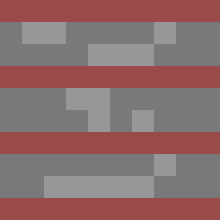
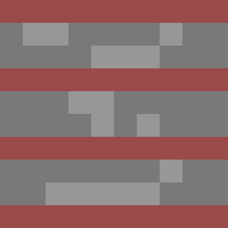
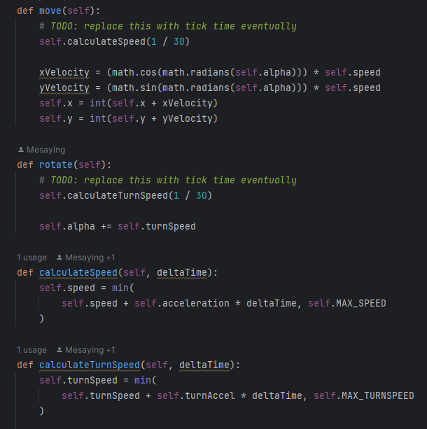
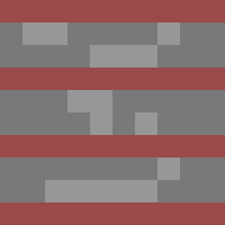

For now we only drew 4 different tiles: Grass, Fire, Water and Wall tiles
These were drawn by hand using an online Pixel art editor

 

We are not yet using these to draw the arena.
Task1
c)
We changed the Robots from directly using a movement Speed variable to determine their speed to now calculate their current velocity using acceleration and the time between "frames".
The same thing was done to the calculation of rotational speed.
To avoid reaching infinite speeds we also introduced constants for maximum movement speed and maximum rotational speed.
This is where we deviate a little from the original Task and instead of a programm wide constant introduce a different constant for every "type" of robot. This will allow us to have more or less agile types of robots in the future.
Furthermore we did not clamp the robots aceleration but instead it's speed.
Implementation of speed and aceleration:

You can see the Robots moving here:
Your browser does not support the video tag.
Task2
For now we only drew 4 different tiles: Grass, Fire, Water and Wall tiles
These were drawn by hand using an online Pixel art editor

We are not yet using these to draw the arena.